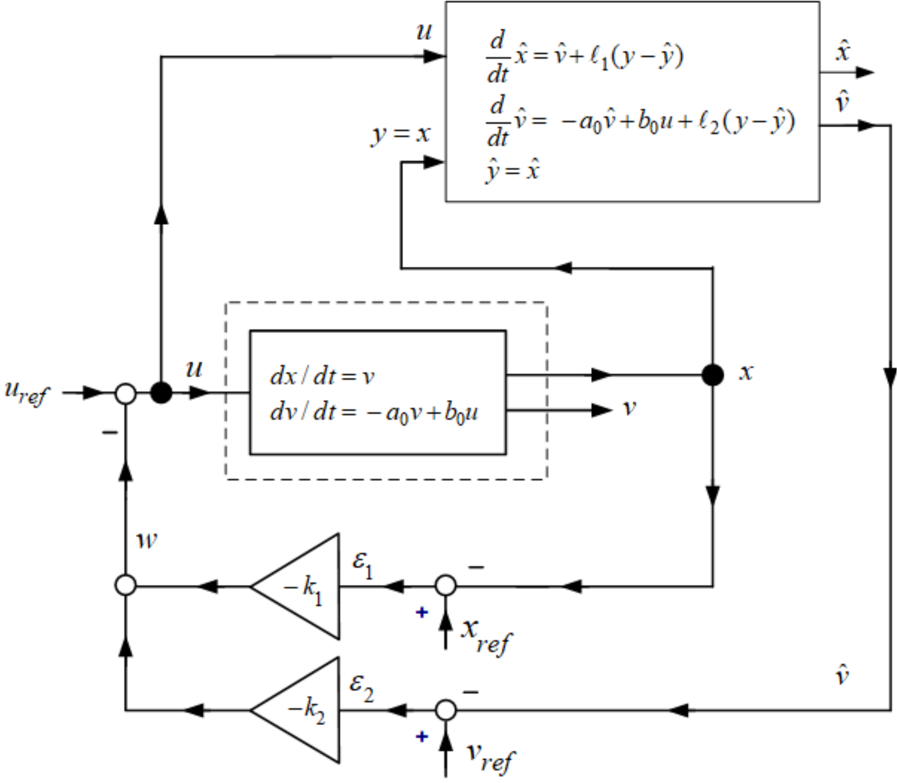
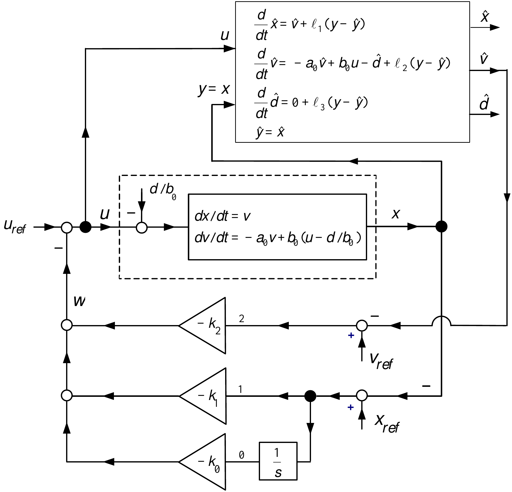
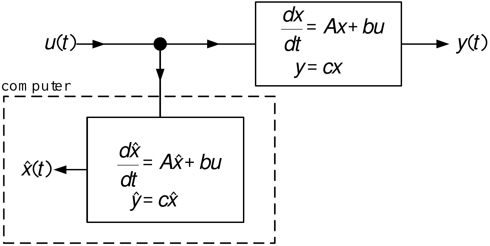
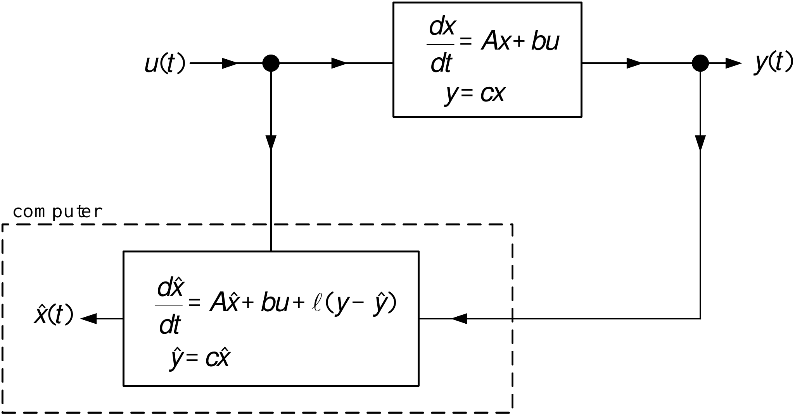

State Estimators and Parameter Identification
System Modeling and Control · Chapter 16
Contents
State Estimators and Observer Design
Observability, Duality, and Canonical Forms
Multi-Output Observers and State Feedback
Least-Squares Parameter Identification
Matrix Facts and the Least-Squares Solution
Typically all of the state variables are not available for feedback.
A way to estimate the state variables is needed.
Example Speed Estimator for the Cart System \[\begin{aligned} \frac{d}{dt}x(t) &=v \\ \frac{d}{dt}v(t) &=-a_{0}v(t)+b_{0}u(t). \end{aligned}\] or \[\begin{aligned} \frac{d}{dt}\underset{z}{\underbrace{\left[ \begin{array}{c} x \\ v \end{array} \right] }} &=\underset{A}{\underbrace{\left[ \begin{array}{rc} 0 & \text{}1 \\ 0 & -a_{0} \end{array} \right] }}\text{}\underset{z}{\underbrace{\left[ \begin{array}{c} x \\ v \end{array} \right] }}+\underset{b}{\underbrace{\left[ \begin{array}{c} 0 \\ b_{0} \end{array} \right] }}u \\ y &=\underset{c}{\underbrace{\left[ \begin{array}{cc} 1 & 0 \end{array} \right] }}\left[ \begin{array}{c} x \\ v \end{array} \right] . \end{aligned}\]
Speed Estimator for the Cart System (continued)
A speed and disturbance observer is defined by \[\begin{aligned} \frac{d}{dt}\underset{\hat{z}}{\underbrace{\left[ \begin{array}{c} \hat{x} \\ \hat{v} \end{array} \right] }} &=\underset{A}{\underbrace{\left[ \begin{array}{rc} 0 & \text{}1 \\ 0 & -a_{0} \end{array} \right] }}\text{}\underset{\hat{z}}{\underbrace{\left[ \begin{array}{c} \hat{x} \\ \hat{v} \end{array} \right] }}+\underset{b}{\underbrace{\left[ \begin{array}{c} 0 \\ b_{0} \end{array} \right] }}u+\underset{\ell }{\underbrace{\left[ \begin{array}{c} \ell _{1} \\ \ell _{2} \end{array} \right] }}(y-\hat{y}) \\ \hat{y} &=\underset{c}{\underbrace{\left[ \begin{array}{cc} 1 & 0 \end{array} \right] }}\left[ \begin{array}{c} \hat{x} \\ \hat{v} \end{array} \right] . \end{aligned}\]
Sample the output \(y=x\) and the input \(u\).
Integrate the above set of equations in real-time.
If \(\ell\) is the zero vector, then the observer is simply a real-time simulation.
Choosing \(\ell \neq 0\) appropriately can result in an accurate estimate of the state.

Speed Estimator for the Cart System (continued) \[\begin{aligned} \frac{dz}{dt} &=Az+bu \\ \frac{d\hat{z}}{dt} &=A\hat{z}+bu+\ell (y-\hat{y}) \end{aligned}\] Define \(\varepsilon \triangleq z-\hat{z}\) to obtain \[\frac{d}{dt}(z-\hat{z})=A(z-\hat{z})-\ell (y-\hat{y})=A(z-\hat{z})-\ell c(z- \hat{z})\] or \[\begin{aligned} \frac{d}{dt}\left[ \begin{array}{c} \varepsilon _{1} \\ \varepsilon _{2} \end{array} \right] &=\left[ \begin{array}{rc} 0 & \text{}1 \\ 0 & -a_{0} \end{array} \right] \left[ \begin{array}{c} \varepsilon _{1} \\ \varepsilon _{2} \end{array} \right] -\left[ \begin{array}{c} \ell _{1} \\ \ell _{2} \end{array} \right] (y-\hat{y}) \\ &=\left[ \begin{array}{rc} 0 & \text{}1 \\ 0 & -a_{0} \end{array} \right] \left[ \begin{array}{c} \varepsilon _{1} \\ \varepsilon _{2} \end{array} \right] -\left[ \begin{array}{c} \ell _{1} \\ \ell _{2} \end{array} \right] \left[ \begin{array}{cc} 1 & 0 \end{array} \right] \left[ \begin{array}{c} \varepsilon _{1} \\ \varepsilon _{2} \end{array} \right] \\ &=\left[ \begin{array}{rc} -\ell _{1} & \text{}1 \\ -\ell _{2} & -a_{0} \end{array} \right] \left[ \begin{array}{c} \varepsilon _{1} \\ \varepsilon _{2} \end{array} \right] . \end{aligned}\]
Speed Estimator for the Cart System (continued) \[\frac{d}{dt}\left[ \begin{array}{c} \varepsilon _{1} \\ \varepsilon _{2} \end{array} \right] =\underset{A-\ell c}{\underbrace{\left[ \begin{array}{rc} -\ell _{1} & \text{}1 \\ -\ell _{2} & -a_{0} \end{array} \right] }}\left[ \begin{array}{c} \varepsilon _{1} \\ \varepsilon _{2} \end{array} \right] .\]
Choose the gains \(\ell _{1},\ell _{2}\) so that \[\begin{aligned} \varepsilon _{1} &=x-\hat{x}\rightarrow 0 \\ \varepsilon _{2} &=v-\hat{v}\rightarrow 0. \end{aligned}\]
We need to choose \(\ell\) so that \(A-\ell c\) is stable which gives \[\left[ \begin{array}{c} \varepsilon _{1}(t) \\ \varepsilon _{2}(t) \end{array} \right] =e^{(A-\ell c)t}\left[ \begin{array}{c} \varepsilon _{1}(0) \\ \varepsilon _{2}(0) \end{array} \right] \rightarrow \left[ \begin{array}{c} 0 \\ 0 \end{array} \right] .\]
Speed and Disturbance Estimate (continued)
A direct way to determine the observer gains \(\ell _{1},\ell _{2}\) is to simply compute \[\begin{aligned} \det (sI-(A-\ell c)) &=\det \left( \left[ \begin{array}{rr} s & 0 \\ 0 & s \end{array} \right] -\left[ \begin{array}{rc} -\ell _{1} & \text{}1 \\ -\ell _{2} & -a_{0} \end{array} \right] \right) \\ &=\det \left[ \begin{array}{cc} s+\ell _{1} & -1 \\ \ell _{2} & s+a_{0} \end{array} \right] \\ &=s^{2}+(\ell _{1}+a_{0})s+\ell _{2}. \end{aligned}\] Set the poles at \(-r_{1},-r_{2}\): \[s^{2}+(\ell _{1}+a_{0})s+\ell _{2}=(s+r_{1})(s+r_{2})=s^{2}+(r_{1}+r_{2})s+r_{1}r_{2}\] which requires \[\begin{aligned} \ell _{1} &=-a_{0}+r_{1}+r_{2} \\ \ell _{2} &=r_{1}r_{2}. \end{aligned}\]
Position Cannot be Estimated from Speed
Suppose we can measure speed, but not position. Position is calculated as \[x(t)=\underset{\text{unknown}}{\underbrace{x(0)}}+\int_{0}^{t}v(\tau )d\tau ,\] but \[\dfrac{d}{dt}\left( c+\int_{0}^{t}v(\tau )d\tau \right) =v(t)\]
- There are an infinite number of position signals with the same speed signal.
Model: \[\begin{aligned} \frac{d}{dt}\left[ \begin{array}{c} x \\ v \end{array} \right] &=\left[ \begin{array}{rc} 0 & \text{}1 \\ 0 & -a_{0} \end{array} \right] \left[ \begin{array}{c} x \\ v \end{array} \right] +\left[ \begin{array}{c} 0 \\ b_{0} \end{array} \right] u \\ y &=\left[ \begin{array}{cc} 0 & 1 \end{array} \right] \left[ \begin{array}{c} x \\ v \end{array} \right] \end{aligned}\]
Observer: \[\begin{aligned} \frac{d}{dt}\left[ \begin{array}{c} \hat{x} \\ \hat{v} \end{array} \right] &=\left[ \begin{array}{rc} 0 & \text{}1 \\ 0 & -a_{0} \end{array} \right] \left[ \begin{array}{c} \hat{x} \\ \hat{v} \end{array} \right] +\left[ \begin{array}{c} 0 \\ b_{0} \end{array} \right] u+\left[ \begin{array}{c} \ell _{1} \\ \ell _{2} \end{array} \right] (y-\hat{y}) \\ \hat{y} &=\left[ \begin{array}{cc} 0 & 1 \end{array} \right] \left[ \begin{array}{c} \hat{x} \\ \hat{v} \end{array} \right] . \end{aligned}\]
Position Cannot be Estimated from Speed
With \(\varepsilon _{1}=x-\hat{x},\varepsilon _{2}=v-\hat{v}\) \[\begin{aligned} \frac{d}{dt}\left[ \begin{array}{c} \varepsilon _{1} \\ \varepsilon _{2} \end{array} \right] &=\left[ \begin{array}{rc} 0 & \text{}1 \\ 0 & -a_{0} \end{array} \right] \left[ \begin{array}{c} \varepsilon _{1} \\ \varepsilon _{2} \end{array} \right] -\left[ \begin{array}{c} \ell _{1} \\ \ell _{2} \end{array} \right] (y-\hat{y}) \\ &=\left( \left[ \begin{array}{rc} 0 & \text{}1 \\ 0 & -a_{0} \end{array} \right] -\left[ \begin{array}{c} \ell _{1} \\ \ell _{2} \end{array} \right] \left[ \begin{array}{cc} 0 & 1 \end{array} \right] \right) \left[ \begin{array}{c} \varepsilon _{1} \\ \varepsilon _{2} \end{array} \right] \\ &=\left[ \begin{array}{cc} 0 & -\ell _{1} \\ 0 & -a_{0}-\ell _{2} \end{array} \right] \left[ \begin{array}{c} \varepsilon _{1} \\ \varepsilon _{2} \end{array} \right] \end{aligned}\] Then \[\det \left( sI-(A-\ell c)\right) =\det \left[ \begin{array}{cc} s & \ell _{1} \\ 0 & s+a_{0}+\ell _{2} \end{array} \right] =s^{2}+(a_{0}+\ell _{2})s\]
- Not stable for any choice of the observer gains \(\ell _{1},\ell _{2}.\)
Example Speed and Disturbance Estimator for the Cart System \[\begin{aligned} \frac{d}{dt}x(t) &=v \\ \frac{d}{dt}v(t) &=-a_{0}v(t)+b_{0}u(t)-\underset{d}{\underbrace{ b_{0}K_{D}F_{d}}} \\ \frac{d}{dt}d(t) &=0. \end{aligned}\] or \[\begin{aligned} \frac{d}{dt}\underset{z}{\underbrace{\left[ \begin{array}{c} x \\ v \\ d \end{array} \right] }} &=\underset{A}{\underbrace{\left[ \begin{array}{rcr} 0 & \text{}1 & 0 \\ 0 & -a_{0} & -1 \\ 0 & \text{}0 & 0 \end{array} \right] }}\underset{z}{\underbrace{\left[ \begin{array}{c} x \\ v \\ d \end{array} \right] }}+\underset{b}{\underbrace{\left[ \begin{array}{c} 0 \\ b_{0} \\ 0 \end{array} \right] }}u \\ y &=\underset{c}{\underbrace{\left[ \begin{array}{ccc} 1 & 0 & 0 \end{array} \right] }}\left[ \begin{array}{c} x \\ v \\ d \end{array} \right] . \end{aligned}\]
Speed and Disturbance Estimator for the Cart System (continued)
A speed and disturbance observer is defined by \[\begin{aligned} \frac{d}{dt}\underset{\hat{z}}{\underbrace{\left[ \begin{array}{c} \hat{x} \\ \hat{v} \\ \hat{d} \end{array} \right] }} &=\underset{A}{\underbrace{\left[ \begin{array}{rcr} 0 & \text{}1 & 0 \\ 0 & -a_{0} & -1 \\ 0 & \text{}0 & 0 \end{array} \right] }}\text{}\underset{\hat{z}}{\underbrace{\left[ \begin{array}{c} \hat{x} \\ \hat{v} \\ \hat{d} \end{array} \right] }}+\underset{b}{\underbrace{\left[ \begin{array}{c} 0 \\ b_{0} \\ 0 \end{array} \right] }}u+\underset{\ell }{\underbrace{\left[ \begin{array}{c} \ell _{1} \\ \ell _{2} \\ \ell _{3} \end{array} \right] }}(y-\hat{y}) \\ \hat{y} &=\underset{c}{\underbrace{\left[ \begin{array}{ccc} 1 & 0 & 0 \end{array} \right] }}\left[ \begin{array}{c} \hat{x} \\ \hat{v} \\ \hat{d} \end{array} \right] . \end{aligned}\]
Sample the output \(y=x\) and the input \(u\) into the computer.
Integrate this set of equations in real-time.
If \(\ell\) is the zero vector, then the observer is simply a real-time simulation.
Choosing \(\ell \neq 0\) appropriately can result in an accurate estimate of the state.

Speed and Disturbance Estimator for the Cart System (continued) \[\begin{aligned} \frac{dz}{dt} &=Az+bu \\ \frac{d\hat{z}}{dt} &=A\hat{z}+bu+\ell (y-\hat{y}). \end{aligned}\] Define \(\varepsilon \triangleq z-\hat{z}\) to obtain \[\frac{d}{dt}(z-\hat{z})=A(z-\hat{z})-\ell (y-\hat{y})=A(z-\hat{z})-\ell c(z- \hat{z})\] or \[\begin{aligned} \frac{d}{dt}\left[ \begin{array}{c} \varepsilon _{1} \\ \varepsilon _{2} \\ \varepsilon _{3} \end{array} \right] &=\left[ \begin{array}{rcr} 0 & \text{}1 & 0 \\ 0 & -a_{0} & -1 \\ 0 & \text{}0 & 0 \end{array} \right] \left[ \begin{array}{c} \varepsilon _{1} \\ \varepsilon _{2} \\ \varepsilon _{3} \end{array} \right] -\left[ \begin{array}{c} \ell _{1} \\ \ell _{2} \\ \ell _{3} \end{array} \right] (y-\hat{y}) \\ &=\left[ \begin{array}{rcr} 0 & \text{}1 & 0 \\ 0 & -a_{0} & -1 \\ 0 & \text{}0 & 0 \end{array} \right] \left[ \begin{array}{c} \varepsilon _{1} \\ \varepsilon _{2} \\ \varepsilon _{3} \end{array} \right] -\left[ \begin{array}{c} \ell _{1} \\ \ell _{2} \\ \ell _{3} \end{array} \right] \left[ \begin{array}{ccc} 1 & 0 & 0 \end{array} \right] \left[ \begin{array}{c} \varepsilon _{1} \\ \varepsilon _{2} \\ \varepsilon _{3} \end{array} \right] \\ &=\left[ \begin{array}{rcr} -\ell _{1} & \text{}1 & 0 \\ -\ell _{2} & -a_{0} & -1 \\ -\ell _{3} & \text{}0 & 0 \end{array} \right] \left[ \begin{array}{c} \varepsilon _{1} \\ \varepsilon _{2} \\ \varepsilon _{3} \end{array} \right] . \end{aligned}\]
Speed and Disturbance Estimator for the Cart System (continued) \[\frac{d}{dt}\left[ \begin{array}{c} \varepsilon _{1} \\ \varepsilon _{2} \\ \varepsilon _{3} \end{array} \right] =\underset{A-\ell c}{\underbrace{\left[ \begin{array}{rcr} -\ell _{1} & \text{}1 & 0 \\ -\ell _{2} & -a_{0} & -1 \\ -\ell _{3} & \text{}0 & 0 \end{array} \right] }}\left[ \begin{array}{c} \varepsilon _{1} \\ \varepsilon _{2} \\ \varepsilon _{3} \end{array} \right] .\]
Choose the gains \(\ell _{1},\ell _{2},\ell _{3}\) so that \[\begin{aligned} \varepsilon _{1} &=x-\hat{x}\rightarrow 0 \\ \varepsilon _{2} &=v-\hat{v}\rightarrow 0 \\ \varepsilon _{3} &=d-\hat{d}\rightarrow 0. \end{aligned}\]
We need to choose \(\ell\) so that \(A-\ell c\) is stable which gives \[\left[ \begin{array}{c} \varepsilon _{1}(t) \\ \varepsilon _{2}(t) \\ \varepsilon _{3}(t) \end{array} \right] =e^{(A-\ell c)t}\left[ \begin{array}{c} \varepsilon _{1}(0) \\ \varepsilon _{2}(0) \\ \varepsilon _{3}(0) \end{array} \right] \rightarrow \left[ \begin{array}{c} 0 \\ 0 \\ 0 \end{array} \right] .\]
Speed and Disturbance Estimate
A direct way to determine the observer gains \(\ell _{1},\ell _{2},\ell _{3}\) is to simply compute \[\begin{aligned} \det (sI-(A-\ell c)) &=\det \left( \left[ \begin{array}{rrr} s & 0 & 0 \\ 0 & s & 0 \\ 0 & 0 & s \end{array} \right] -\left[ \begin{array}{rcr} -\ell _{1} & 1 & 0 \\ -\ell _{2} & -a_{0} & -1 \\ -\ell _{3} & 0 & 0 \end{array} \right] \right) \\ &=\det \left[ \begin{array}{ccc} s+\ell _{1} & -1 & 0 \\ \ell _{2} & s+a_{0} & 1 \\ \ell _{3} & 0 & s \end{array} \right] \\ &=s^{3}+(\ell _{1}+a_{0})s^{2}+(\ell _{2}+a_{0}\ell _{1})s-\ell _{3}. \end{aligned}\] Set the poles at \(-r_{1},-r_{2},-r_{3}\): \[\begin{aligned} && s^{3}+(\ell _{1}+a_{0})s^{2}+(\ell _{2}+a_{0}\ell _{1})s-\ell _{3} \\ &=(s+r_{1})(s+r_{2})(s+r_{3}) \\ &=s^{3}+(r_{1}+r_{2}+r_{3})s^{2}+(r_{1}r_{2}+r_{1}r_{3}+r_{2}r_{3})s+r_{1}r_{2}r_{3} \end{aligned}\] which requires \[\begin{aligned} \ell _{1} &=-a_{0}+r_{1}+r_{2}+r_{3} \\ \ell _{2} &=-a_{0}\ell _{1}+r_{1}r_{2}+r_{1}r_{3}+r_{2}r_{3} \\ \ell _{3} &=-r_{1}r_{2}r_{3}. \end{aligned}\]
\[\begin{aligned} \frac{dx}{dt} &=Ax+bu,A\in \mathbb{R} ^{n\times n},b\in \mathbb{R} ^{n} \\ y &=cx,c\in \mathbb{R} ^{1\times n}. \end{aligned}\]

\[\begin{aligned} \frac{dx}{dt} &=Ax+bu \\ \frac{d\hat{x}}{dt} &=A\hat{x}+bu \\ \Longrightarrow \frac{d}{dt}(x-\hat{x}) &=A(x-\hat{x}). \end{aligned}\]
\[\frac{d}{dt}(x-\hat{x})=A(x-\hat{x}).\]
If \(A\) is stable, then \[\hat{x}(t)-x(t)=e^{At}(\hat{x}(0)-x(0))\rightarrow 0.\]
If \(A\) is unstable this estimator won’t work.
Even if \(A\) is stable the rate that \(\hat{x}(t)-x(t)\rightarrow 0\) is fixed by the eigenvalues of \(A\).
Consider \[\begin{aligned} \frac{dx}{dt} &=Ax+bu,A\in \mathbb{R} ^{n\times n},b\in \mathbb{R} ^{n} \\ y &=cx,c\in \mathbb{R} ^{1\times n}. \end{aligned}\]
with \(\det (sI-A)=s^{n}+\beta _{1}s^{n-1}+\beta _{2}s^{n-2}+\cdots +\beta _{n}.\)
Define the state estimator \[\begin{aligned} \frac{d\hat{x}}{dt} &=A\hat{x}+bu+\ell (y-\hat{y})=A\hat{x}+bu+\ell c(x- \hat{x}) \\ \hat{y} &=c\hat{x} \end{aligned}\]

Error System: \[\frac{d}{dt}\underset{\varepsilon }{\underbrace{(x-\hat{x})}}=A(x-\hat{x} )-\ell c(x-\hat{x})=(A-\ell c)\underset{\varepsilon }{\underbrace{(x-\hat{x}) }}\]
Solution \(\varepsilon (t)=e^{(A-\ell c)t}\varepsilon (0).\)
Find \(\ell \in \mathbb{R} ^{n}\) such that \(A-\ell c\) is stable.
System Matrices in Observer Canonical Form
Let \[A_{o}=\left[ \begin{array}{ccc} 0 & 0 & -\beta _{0} \\ 1 & 0 & -\beta _{1} \\ 0 & 1 & -\beta _{2} \end{array} \right] ,\text{}c_{o}=\left[ \begin{array}{ccc} 0 & 0 & 1 \end{array} \right]\] Then \[\det (sI-A_{o})=\det \left[ \begin{array}{ccc} s & 0 & \beta _{0} \\ -1\text{} & s & \beta _{1} \\ 0 & -1\text{} & s+\beta _{2} \end{array} \right] =s^{3}+\beta _{2}s^{2}+\beta _{1}s+\beta _{0}.\] We say that the pair \((c_{o},A_{o})\) are in observer canonical form. With \[\ell =\left[ \begin{array}{c} \ell _{0} \\ \ell _{1} \\ \ell _{2} \end{array} \right]\] we compute \(\det (sI-(A_{o}-\ell c_{o})).\)
System Matrices in Observer Canonical Form (continued)
\[\begin{aligned} \det (sI-(A_{o}-\ell c_{o})) &=\det \left( \left[ \begin{array}{ccc} s & 0 & 0 \\ 0 & s & 0 \\ 0 & 0 & s \end{array} \right] -\left( \left[ \begin{array}{ccc} 0 & 0 & -\beta _{0} \\ 1 & 0 & -\beta _{1} \\ 0 & 1 & -\beta _{2} \end{array} \right] -\left[ \begin{array}{c} \ell _{0} \\ \ell _{1} \\ \ell _{2} \end{array} \right] \left[ \begin{array}{ccc} 0 & 0 & 1 \end{array} \right] \right) \right) \\ &=\det \left( \left[ \begin{array}{ccc} s & 0 & 0 \\ 0 & s & 0 \\ 0 & 0 & s \end{array} \right] -\left( \left[ \begin{array}{ccc} 0 & 0 & -\beta _{0} \\ 1 & 0 & -\beta _{1} \\ 0 & 1 & -\beta _{2} \end{array} \right] -\left[ \begin{array}{ccc} 0 & 0 & \ell _{0} \\ 0 & 0 & \ell _{1} \\ 0 & 0 & \ell _{2} \end{array} \right] \right) \right) \\ &=\det \left( \left[ \begin{array}{ccc} s & 0 & 0 \\ 0 & s & 0 \\ 0 & 0 & s \end{array} \right] -\left[ \begin{array}{ccc} 0 & 0 & -\beta _{0}-\ell _{0} \\ 1 & 0 & -\beta _{1}-\ell _{1} \\ 0 & 1 & -\beta _{2}-\ell _{2} \end{array} \right] \right) \\ &=\det \left( \left[ \begin{array}{ccc} s & 0 & \beta _{0}+\ell _{0} \\ 1 & s & \beta _{1}+\ell _{1} \\ 0 & 1 & s+\beta _{2}+\ell _{2} \end{array} \right] \right) \\ &=s^{3}+(\beta _{2}+\ell _{2})s^{2}+(\beta _{1}+\ell _{1})s+\beta _{0}+\ell _{0}. \end{aligned}\]
System Matrices in Observer Canonical Form (continued)
Previous slide: \[\det (sI-(A_{o}-\ell c_{o}))=s^{3}+(\beta _{2}+\ell _{2})s^{2}+(\beta _{1}+\ell _{1})s+\beta _{0}+\ell _{0}.\]
Desired CL characteristic polynomial: \[s^{3}+\beta _{d2}s^{2}+\beta _{d1}s+\beta _{d0}\]
Choosing \[\ell =\left[ \begin{array}{c} \ell _{0} \\ \ell _{1} \\ \ell _{2} \end{array} \right] =\left[ \begin{array}{c} \beta _{d0}-\beta _{0} \\ \beta _{d1}-\beta _{1} \\ \beta _{d2}-\beta _{2} \end{array} \right]\]
results in \[\det (sI-(A_{o}-\ell c_{o}))=s^{3}+\beta _{d2}s^{2}+\beta _{d1}s+\beta _{d0}.\]
- Conclusion: Put the system in observer canonical form!
Let
\[\begin{aligned} r&=\left[\begin{array}{ccc}r_{1}&r_{2}&r_{3}\end{array}\right], & T&=\left[ \begin{array}{c} t_{1}\\ t_{2}\\ t_{3} \end{array}\right] =\left[ \begin{array}{ccc} t_{11} & t_{12} & t_{13} \\ t_{21} & t_{22} & t_{23} \\ t_{31} & t_{32} & t_{33} \end{array}\right]. \end{aligned}\]
Then
\[\begin{aligned} rT &= r_{1}t_{1}+r_{2}t_{2}+r_{3}t_{3} \\ &=r_{1}\left[\begin{array}{ccc}t_{11}&t_{12}&t_{13}\end{array}\right] +r_{2}\left[\begin{array}{ccc}t_{21}&t_{22}&t_{23}\end{array}\right] +r_{3}\left[\begin{array}{ccc}t_{31}&t_{32}&t_{33}\end{array}\right]. \end{aligned}\]
- Thus, \(rT\) is a linear combination of the rows of \(T\).
If the rows of \(R\) are denoted by \(\rho _{1},\rho _{2},\rho _{3}\), the same rule applies row by row:
\[RT=\left[ \begin{array}{c} \rho _{1}T\\ \rho _{2}T\\ \rho _{3}T \end{array}\right], \qquad \rho _{i}T=\sum_{j=1}^{3}r_{ij}t_{j}.\]
System Matrices NOT in Observer Canonical Form
\[\begin{aligned} \frac{dx}{dt} &=Ax+bu,A\in \mathbb{R} ^{3\times 3},b\in \mathbb{R} ^{3} \\ y &=cx,c\in \mathbb{R} ^{1\times 3} \\ \det (sI-A) &=s^{3}+\beta _{2}s^{2}+\beta _{1}s+\beta _{0}. \end{aligned}\]
Suppose the observability matrix \[\mathcal{O}\triangleq \left[ \begin{array}{l} c \\ cA \\ cA^{2} \end{array} \right] \text{satisfies}\det \mathcal{O}\neq 0.\]
Let \(x^{\prime }\triangleq \mathcal{O}x\) to obtain \[\begin{aligned} \frac{dx^{\prime }}{dt} &=\underset{A^{\prime }}{\underbrace{\mathcal{O}A \mathcal{O}^{-1}}}x^{\prime }+\underset{b^{\prime }}{\underbrace{\mathcal{O}b }}u \\ y &=\underset{c^{\prime }}{\underbrace{c\mathcal{O}^{-1}}}x^{\prime }. \end{aligned}\] That is, \[\begin{aligned} A^{\prime } &=\mathcal{O}A\mathcal{O}^{-1} \\ c^{\prime } &=c\mathcal{O}^{-1}. \end{aligned}\]
System Matrices NOT in Observer Canonical Form (continued)
Rewrite \[\begin{aligned} A^{\prime } &=\mathcal{O}A\mathcal{O}^{-1} \\ c^{\prime } &=c\mathcal{O}^{-1} \end{aligned}\] as \[\begin{aligned} A^{\prime }\mathcal{O} &\mathcal{=}&\mathcal{O}A \\ c^{\prime }\mathcal{O} &=c \end{aligned}\] or \[\left[ \begin{array}{ccc} a_{11}^{\prime } & a_{12}^{\prime } & a_{13}^{\prime } \\ a_{21}^{\prime } & a_{22}^{\prime } & a_{23}^{\prime } \\ a_{31}^{\prime } & a_{32}^{\prime } & a_{33}^{\prime } \end{array} \right] \underset{\mathcal{O}}{\underbrace{\left[ \begin{array}{l} c \\ cA \\ cA^{2} \end{array} \right] }}=\underset{\mathcal{O}A}{\underbrace{\left[ \begin{array}{l} cA \\ cA^{2} \\ cA^{3} \end{array} \right] }}\text{ and }\left[ \begin{array}{ccc} c_{1}^{\prime } & c_{2}^{\prime } & c_{3}^{\prime } \end{array} \right] \left[ \begin{array}{l} c \\ cA \\ cA^{2} \end{array} \right] =c.\]
By the above matrix multiplication digression \[\underset{A^{\prime }\mathcal{O}}{\underbrace{\left[ \begin{array}{c} a_{11}^{\prime }c+a_{12}^{\prime }cA+a_{13}^{\prime }cA^{2} \\ a_{21}^{\prime }c+a_{22}^{\prime }cA+a_{23}^{\prime }cA^{2} \\ a_{31}^{\prime }c+a_{32}^{\prime }cA+a_{33}^{\prime }cA^{2} \end{array} \right] }}=\underset{\mathcal{O}A}{\underbrace{\left[ \begin{array}{l} cA \\ cA^{2} \\ cA^{3} \end{array} \right] }}\text{ and }\underset{c^{\prime }\mathcal{O}}{\underbrace{ c_{1}^{\prime }c+c_{2}^{\prime }cA+c_{3}^{\prime }cA^{2}}}=c.\]
System Matrices NOT in Observer Canonical Form (continued)
From the previous slide:
\[\underset{A^{\prime }\mathcal{O}}{\underbrace{\left[ \begin{array}{c} a_{11}^{\prime }c+a_{12}^{\prime }cA+a_{13}^{\prime }cA^{2} \\ a_{21}^{\prime }c+a_{22}^{\prime }cA+a_{23}^{\prime }cA^{2} \\ a_{31}^{\prime }c+a_{32}^{\prime }cA+a_{33}^{\prime }cA^{2} \end{array} \right] }}=\underset{\mathcal{O}A}{\underbrace{\left[ \begin{array}{l} cA \\ cA^{2} \\ cA^{3} \end{array} \right] }}\text{ and }\underset{c^{\prime }\mathcal{O}}{\underbrace{ c_{1}^{\prime }c+c_{2}^{\prime }cA+c_{3}^{\prime }cA^{2}}}=c.\]
By inspection we see that \[A^{\prime }=\left[ \begin{array}{ccc} 0 & 1 & 0 \\ 0 & 0 & 1 \\ a_{31}^{\prime } & a_{32}^{\prime } & a_{33}^{\prime } \end{array} \right] ,\text{}c^{\prime }=\left[ \begin{array}{ccc} 1 & 0 & 0 \end{array} \right] .\]
We still need to determine \(a_{31}^{\prime },a_{32}^{\prime },a_{33}^{\prime }\) where \[a_{31}^{\prime }c+a_{32}^{\prime }cA+a_{33}^{\prime }cA^{2}=cA^{3}.\]
System Matrices NOT in Observer Canonical Form (continued)
Previous slide: \[A^{\prime }=\left[ \begin{array}{ccc} 0 & 1 & 0 \\ 0 & 0 & 1 \\ a_{31}^{\prime } & a_{32}^{\prime } & a_{33}^{\prime } \end{array} \right] ,\text{}c^{\prime }=\left[ \begin{array}{ccc} 1 & 0 & 0 \end{array} \right] .\]
As \(\det (sI-A)=s^{3}+\beta _{2}s^{2}+\beta _{1}s+\beta _{0}\): \[s^{3}+\beta _{2}s^{2}+\beta _{1}s+\beta _{0}=\det (sI-A)=\det (sI-A^{\prime })=s^{3}-a_{33}^{\prime }s^{2}-a_{32}^{\prime }s-a_{31}^{\prime }.\] That is, \[A^{\prime }=\left[ \begin{array}{ccc} 0 & 1 & 0 \\ 0 & 0 & 1 \\ -\beta _{0} & -\beta _{1} & -\beta _{2} \end{array} \right] ,\text{}c^{\prime }=\left[ \begin{array}{ccc} 1 & 0 & 0 \end{array} \right] .\]
- Not observer canonical form yet.
System Matrices NOT in Observer Canonical Form (continued)
\[A_{o}=\left[ \begin{array}{ccc} 0 & 0 & -\beta _{0} \\ 1 & 0 & -\beta _{1} \\ 0 & 1 & -\beta _{2} \end{array} \right] ,\text{}c_{o}=\left[ \begin{array}{ccc} 0 & 0 & 1 \end{array} \right] \text{and}\mathcal{O}_{o}\triangleq \left[ \begin{array}{l} c_{o} \\ c_{o}A_{o} \\ c_{o}A_{o}^{2} \end{array} \right] .\] \[\begin{aligned} \frac{dx_{o}}{dt} &=A_{o}x_{o}+b_{o}u,A_{o}\in \mathbb{R} ^{3\times 3},b_{o}\in \mathbb{R} ^{3} \\ y &=c_{o}x_{o},c_{o}\in \mathbb{R} ^{1\times 3}. \end{aligned}\] \(x^{\prime }=O_{o}x_{o}\Longrightarrow\) \[\begin{aligned} \frac{dx^{\prime }}{dt} &=\underset{A^{\prime }}{\underbrace{\mathcal{O} _{o}A_{o}\mathcal{O}_{o}^{-1}}}x^{\prime }+\mathcal{O}_{o}b_{o}u \\ y &=\underset{c^{\prime }}{\underbrace{c_{o}\mathcal{O}_{o}^{-1}}}x^{\prime } \end{aligned}\] with \[\begin{aligned} A^{\prime } &=\mathcal{O}_{o}A_{o}\mathcal{O}_{o}^{-1}=\left[ \begin{array}{ccc} 0 & 1 & 0 \\ 0 & 0 & 1 \\ -\beta _{0} & -\beta _{1} & -\beta _{2} \end{array} \right] ,b^{\prime }=\mathcal{O}_{o}b_{o}=\left[ \begin{array}{c} b_{1}^{\prime } \\ b_{2}^{\prime } \\ b_{3}^{\prime } \end{array} \right] \\ \text{}c^{\prime } &=c_{o}\mathcal{O}_{o}^{-1}=\left[ \begin{array}{ccc} 1 & 0 & 0 \end{array} \right] . \end{aligned}\]
System Matrices NOT in Observer Canonical Form (continued)
Thus the inverse transformation \[x_{o}=\mathcal{O}_{o}^{-1}x^{\prime }\] must take \[\begin{aligned} \frac{dx^{\prime }}{dt} &=\underset{A^{\prime }}{\underbrace{\left[ \begin{array}{ccc} 0 & 1 & 0 \\ 0 & 0 & 1 \\ -\beta _{0} & -\beta _{1} & -\beta _{2} \end{array} \right] }}x^{\prime }+\underset{b^{\prime }}{\underbrace{\left[ \begin{array}{c} b_{1}^{\prime } \\ b_{2}^{\prime } \\ b_{3}^{\prime } \end{array} \right] }}u \\ y &=\underset{c^{\prime }}{\underbrace{\left[ \begin{array}{ccc} 1 & 0 & 0 \end{array} \right] }}x^{\prime } \end{aligned}\] to the observer canonical form \[\begin{aligned} \frac{dx_{o}}{dt} &=\underset{A_{o}}{\underbrace{\left[ \begin{array}{ccc} 0 & 0 & -\beta _{0} \\ 1 & 0 & -\beta _{1} \\ 0 & 1 & -\beta _{2} \end{array} \right] }}x_{o}+\underset{b_{o}}{\underbrace{\left[ \begin{array}{c} b_{1} \\ b_{2} \\ b_{3} \end{array} \right] }}u \\ y &=\underset{c_{o}}{\underbrace{\left[ \begin{array}{ccc} 0 & 0 & 1 \end{array} \right] }}x_{o}. \end{aligned}\]
Transformation to Observer Canonical Form
Given \[\begin{aligned} \frac{dx}{dt} &=Ax+bu,A\in \mathbb{R} ^{3\times 3},b\in \mathbb{R} ^{3} \\ y &=cx,c\in \mathbb{R} ^{1\times 3} \\ \det (sI-A) &=s^{3}+\beta _{2}s^{2}+\beta _{1}s+\beta _{0} \end{aligned}\] with \(\mathcal{O}\triangleq \left[ \begin{array}{l} c \\ cA \\ cA^{2} \end{array} \right] ,\det \mathcal{O}\neq 0.\)
With \(\mathcal{O}_{o}\triangleq \left[ \begin{array}{l} c_{o} \\ c_{o}A_{o} \\ c_{o}A_{o}^{2} \end{array} \right]\) the transformation \(x_{o}=\mathcal{O}_{o}^{-1}\mathcal{O}x\) results in \[\begin{aligned} \frac{dx_{o}}{dt} &=\underset{A_{o}}{\underbrace{\left[ \begin{array}{ccc} 0 & 0 & -\beta _{0} \\ 1 & 0 & -\beta _{1} \\ 0 & 1 & -\beta _{2} \end{array} \right] }}x_{o}+\underset{b_{o}}{\underbrace{\left[ \begin{array}{c} b_{o1} \\ b_{o2} \\ b_{o3} \end{array} \right] }}u \\ y &=\underset{c_{o}}{\underbrace{\left[ \begin{array}{ccc} 0 & 0 & 1 \end{array} \right] }}x_{o}. \end{aligned}\]
This follows from the previous two examples.
Placement of the Observer Poles
Given \[\begin{aligned} \frac{dx}{dt} &=Ax+bu,A\in \mathbb{R} ^{3\times 3},b\in \mathbb{R} ^{3} \\ y &=cx,c\in \mathbb{R} ^{1\times 3} \\ \det (sI-A) &=s^{3}+\beta _{2}s^{2}+\beta _{1}s+\beta _{0} \end{aligned}\] with \[\mathcal{O}\triangleq \left[ \begin{array}{l} c \\ cA \\ cA^{2} \end{array} \right] ,\text{}\det \mathcal{O}\neq 0.\] Set \[A_{o}=\left[ \begin{array}{ccc} 0 & 0 & -\beta _{0} \\ 1 & 0 & -\beta _{1} \\ 0 & 1 & -\beta _{2} \end{array} \right] \mathbf{},c_{o}=\left[ \begin{array}{ccc} 0 & 0 & 1 \end{array} \right] \mathbf{},\mathcal{O}_{o}\triangleq \left[ \begin{array}{l} c_{o} \\ c_{o}A_{o} \\ c_{o}A_{o}^{2} \end{array} \right] .\] Let the desired closed-loop characteristic polynomial be \[s^{3}+\beta _{d2}s^{2}+\beta _{d1}s+\beta _{d0}.\]
Placement of the Observer Poles (continued)
The observer is \[\begin{aligned} \frac{d\hat{x}}{dt} &=A\hat{x}+bu+\ell (y-\hat{y}) \\ \hat{y} &=c\hat{x}. \end{aligned}\] Using the transformation \(\hat{x}_{o}=\mathcal{O}_{o}^{-1}\mathcal{O}\hat{x}\) this becomes \[\begin{aligned} \frac{d\hat{x}_{o}}{dt} &=\underset{A_{o}}{\underbrace{(\mathcal{O}_{o}^{-1} \mathcal{O})A(\mathcal{O}_{o}^{-1}\mathcal{O})^{-1}}}\hat{x}_{o}+\underset{ b_{o}}{\underbrace{(\mathcal{O}_{o}^{-1}\mathcal{O})b}}u+\underset{\ell _{o}} {\underbrace{(\mathcal{O}_{o}^{-1}\mathcal{O})\ell }}(y-\hat{y}) \\ \hat{y} &=\underset{c_{o}}{\underbrace{c(\mathcal{O}_{o}^{-1}\mathcal{O}) ^{-1}}}\hat{x}_{o}. \end{aligned}\] Thus \[\ell _{o}=(\mathcal{O}_{o}^{-1}\mathcal{O})\ell \text{or}\ell = \mathcal{O}^{-1}\mathcal{O}_{o}\ell _{o}\] with \[\ell _{o}=\beta _{d}-\beta =\left[ \begin{array}{c} \beta _{d0}-\beta _{0} \\ \beta _{d1}-\beta _{1} \\ \beta _{d2}-\beta _{2} \end{array} \right] .\]
- That is, \(\ell =\mathcal{O}^{-1}\mathcal{O}_{o}\ell _{o}\) makes \(\det (sI-(A-\ell c))=s^{3}+\beta _{d2}s^{2}+\beta _{d1}s+\beta _{d0}\).
Observer for the Inverted Pendulum \(y=x+\left( \ell + \dfrac{J}{m\ell }\right) \theta\)
Let \(z=\left[\begin{array}{cccc}x&v&\theta&\omega\end{array}\right]^{T}\). The model is
\[\dot z=Az+bu, \qquad y=cz,\]
with
\[A=\left[ \begin{array}{cccc} 0 & 1 & 0 & 0 \\ 0 & 0 & -\dfrac{gm^{2}\ell ^{2}}{Mm\ell ^{2}+J(M+m)} & 0 \\ 0 & 0 & 0 & 1 \\ 0 & 0 & \dfrac{mg\ell (M+m)}{Mm\ell ^{2}+J(M+m)} & 0 \end{array} \right],\]
\[\begin{aligned} b&=\left[ \begin{array}{c} 0 \\ \dfrac{J+m\ell ^{2}}{Mm\ell ^{2}+J(M+m)} \\ 0 \\ -\dfrac{m\ell }{Mm\ell ^{2}+J(M+m)} \end{array} \right], & c&=\left[\begin{array}{cccc}1&0&\ell+\dfrac{J}{m\ell}&0\end{array}\right]. \end{aligned}\]
Observer for the Inverted Pendulum \(y=x+\left( \ell + \dfrac{J}{m\ell }\right) \theta\)
Observability Matrix \[\begin{aligned} c &=\left[ \begin{array}{cccc} 1 & 0 & \ell +\dfrac{J}{m\ell } & 0 \end{array} \right] \\ cA &=\left[ \begin{array}{cccc} 1 & 0 & \ell +\dfrac{J}{m\ell } & 0 \end{array} \right] \left[ \begin{array}{cccc} 0 & 1 & 0 & 0 \\ 0 & 0 & -\dfrac{gm^{2}\ell ^{2}}{Mm\ell ^{2}+J(M+m)} & 0 \\ 0 & 0 & 0 & 1 \\ 0 & 0 & \dfrac{mg\ell (M+m)}{Mm\ell ^{2}+J(M+m)} & 0 \end{array} \right] =\left[ \begin{array}{cccc} 0 & 1 & 0 & \ell +\dfrac{J}{m\ell } \end{array} \right] \\ cA^{2} &=\left[ \begin{array}{cccc} 0 & 1 & 0 & \ell +\dfrac{J}{m\ell } \end{array} \right] \left[ \begin{array}{cccc} 0 & 1 & 0 & 0 \\ 0 & 0 & -\dfrac{gm^{2}\ell ^{2}}{Mm\ell ^{2}+J(M+m)} & 0 \\ 0 & 0 & 0 & 1 \\ 0 & 0 & \dfrac{mg\ell (M+m)}{Mm\ell ^{2}+J(M+m)} & 0 \end{array} \right] =\left[ \begin{array}{cccc} 0 & 0 & g & 0 \end{array} \right] \\ cA^{3} &=\left[ \begin{array}{cccc} 0 & 0 & g & 0 \end{array} \right] \left[ \begin{array}{cccc} 0 & 1 & 0 & 0 \\ 0 & 0 & -\dfrac{gm^{2}\ell ^{2}}{Mm\ell ^{2}+J(M+m)} & 0 \\ 0 & 0 & 0 & 1 \\ 0 & 0 & \dfrac{mg\ell (M+m)}{Mm\ell ^{2}+J(M+m)} & 0 \end{array} \right] =\left[ \begin{array}{cccc} 0 & 0 & 0 & g \end{array} \right] \end{aligned}\]
Observer for the Inverted Pendulum \(y=x+\left( \ell + \dfrac{J}{m\ell }\right) \theta\)
Observability Matrix \[\begin{aligned} \mathcal{O} &=\left[ \begin{array}{cccc} 1 & 0 & \ell +\dfrac{J}{m\ell } & 0 \\ 0 & 1 & 0 & \ell +\dfrac{J}{m\ell } \\ 0 & 0 & g & 0 \\ 0 & 0 & 0 & g \end{array} \right] \\ \det \mathcal{O} &=g^{2} \end{aligned}\]
Observer for the Inverted Pendulum \(y=x+\left( \ell + \dfrac{J}{m\ell }\right) \theta\)
Open-Loop Characteristic Polynomial - \(\det (sI-A)=s^{4}+\beta _{3}s^{3}+\beta _{2}s^{2}+\beta _{1}s+\beta _{0}\) \[\begin{aligned} A &=\left[ \begin{array}{cccc} 0 & 1 & 0 & 0 \\ 0 & 0 & -\dfrac{gm^{2}\ell ^{2}}{Mm\ell ^{2}+J(M+m)} & 0 \\ 0 & 0 & 0 & 1 \\ 0 & 0 & \dfrac{mg\ell (M+m)}{Mm\ell ^{2}+J(M+m)} & 0 \end{array} \right] ,\text{}b=\left[ \begin{array}{c} 0 \\ \dfrac{J+m\ell ^{2}}{Mm\ell ^{2}+J(M+m)} \\ 0 \\ -\dfrac{m\ell }{Mm\ell ^{2}+J(M+m)} \end{array} \right] \\ c &=\left[ \begin{array}{cccc} 1 & 0 & \ell +\dfrac{J}{m\ell } & 0 \end{array} \right] ,\alpha ^{2}\triangleq \frac{mg\ell (M+m)}{Mm\ell ^{2}+J(M+m)} \end{aligned}\] we have \[\det (sI-A)=\det \left[ \begin{array}{cccc} s & -1 & 0 & 0 \\ 0 & s & \dfrac{gm^{2}\ell ^{2}}{Mm\ell ^{2}+J(M+m)} & 0 \\ 0 & 0 & s & -1 \\ 0 & 0 & -\dfrac{mg\ell (M+m)}{Mm\ell ^{2}+J(M+m)} & s \end{array} \right] =s^{4}-\alpha ^{2}s^{2}\] \[\beta _{3}=0,\beta _{2}=-\alpha ^{2},\beta _{1}=0,\beta _{0}=0.\]
Observer for the Inverted Pendulum \(y=x+\left( \ell + \dfrac{J}{m\ell }\right) \theta\)
Observer Canonical Form \[\begin{aligned} A_{o} &=\left[ \begin{array}{cccc} 0 & 0 & 0 & -\beta _{0} \\ 1 & 0 & 0 & -\beta _{1} \\ 0 & 1 & 0 & -\beta _{2} \\ 0 & 0 & 1 & -\beta _{3} \end{array} \right] =\left[ \begin{array}{cccc} 0 & 0 & 0 & 0 \\ 1 & 0 & 0 & 0 \\ 0 & 1 & 0 & \alpha ^{2} \\ 0 & 0 & 1 & 0 \end{array} \right] \\ c_{o} &=\left[ \begin{array}{cccc} 0 & 0 & 0 & 1 \end{array} \right] \end{aligned}\]
Observability Matrix \(\mathcal{O}_{o}\) for \((c_{o},A_{o}).\)
\[\mathcal{O}_{o}=\left[ \begin{array}{c} c_{o} \\ c_{o}A_{o} \\ c_{o}A_{o}^{2} \\ c_{o}A_{o}^{3} \end{array} \right] =\left[ \begin{array}{cccc} 0 & 0 & 0 & 1 \\ 0 & 0 & 1 & 0 \\ 0 & 1 & 0 & \alpha ^{2} \\ 1 & 0 & \alpha ^{2} & 0 \end{array} \right] ,\det \mathcal{O}_{o}=1.\]
Observer for the Inverted Pendulum \(y=x+\left( \ell + \dfrac{J}{m\ell }\right) \theta\)
\[\begin{aligned} p_{d}(s)&=\prod_{i=1}^{4}(s+\gamma _{i}) \\ &=s^{4}+\beta _{d3}s^{3}+\beta _{d2}s^{2}+\beta _{d1}s+\beta _{d0}, \end{aligned}\]
where
\[\begin{aligned} \beta _{d3}&=\gamma _1+\gamma _2+\gamma _3+\gamma _4,\\ \beta _{d2}&=\gamma _1\gamma _2+\gamma _1\gamma _3+\gamma _1\gamma _4 +\gamma _2\gamma _3+\gamma _2\gamma _4+\gamma _3\gamma _4,\\ \beta _{d1}&=\gamma _1\gamma _2\gamma _3+\gamma _1\gamma _2\gamma _4 +\gamma _1\gamma _3\gamma _4+\gamma _2\gamma _3\gamma _4,\\ \beta _{d0}&=\gamma _1\gamma _2\gamma _3\gamma _4. \end{aligned}\]
Set
\[\ell =\mathcal{O}^{-1}\mathcal{O}_{o}\ell _o, \qquad \ell _o=\left[ \begin{array}{c} \beta _{d0}-\beta _0\\ \beta _{d1}-\beta _1\\ \beta _{d2}-\beta _2\\ \beta _{d3}-\beta _3 \end{array}\right],\]
to place the closed-loop observer poles at \(-\gamma _{1},-\gamma _{2},-\gamma _{3},-\gamma _{4}.\)
Observer: \(\dot{\hat z}=A\hat z+bu+\ell(y-\hat y)\), \(\hat y=c\hat z\).
The observer design procedure above is for single outputs.
In the case of the inverted pendulum we measure \(x\) and \(\theta\).
Design an observer using the vector output measurement \(y=\left[ \begin{array}{c} x \\ \theta \end{array} \right] .\)
Linear Model of the Inv Pend about \((x_{eq},v_{eq},\theta _{eq},\omega _{eq})=(0,0,0,0,0)\) is \[\begin{aligned} \underset{dz/dt}{\underbrace{\left[ \begin{array}{c} dx/dt \\ dv/dt \\ d\theta /dt \\ d\omega /dt \end{array} \right] }} &=\underset{A}{\underbrace{\left[ \begin{array}{cccc} 0 & 1 & 0 & 0 \\ 0 & 0 & -\kappa gm^{2}\ell ^{2} & 0 \\ 0 & 0 & 0 & 1 \\ 0 & 0 & \alpha ^{2} & 0 \end{array} \right] }}\underset{z}{\underbrace{\left[ \begin{array}{c} x \\ v \\ \theta \\ \omega \end{array} \right] }}+\underset{b}{\underbrace{\left[ \begin{array}{c} 0 \\ \kappa (J+m\ell ^{2}) \\ 0 \\ -\kappa m\ell \end{array} \right] }}u. \\ y &=\underset{C}{\underbrace{\left[ \begin{array}{cccc} 1 & 0 & 0 & 0 \\ 0 & 0 & 1 & 0 \end{array} \right] }}\underset{z}{\underbrace{\left[ \begin{array}{c} x \\ v \\ \theta \\ \omega \end{array} \right] }} \end{aligned}\] where \(\kappa =\dfrac{1}{Mm\ell ^{2}+J(M+m)},\ \alpha ^{2}=\dfrac{mg\ell (M+m)}{Mm\ell ^{2}+J(M+m)}.\)
\[\begin{aligned} \underset{dz/dt}{\underbrace{\left[ \begin{array}{c} dx/dt \\ dv/dt \\ d\theta /dt \\ d\omega /dt \end{array} \right] }} &=\underset{A}{\underbrace{\left[ \begin{array}{cccc} 0 & 1 & 0 & 0 \\ 0 & 0 & -\kappa gm^{2}\ell ^{2} & 0 \\ 0 & 0 & 0 & 1 \\ 0 & 0 & \alpha ^{2} & 0 \end{array} \right] }}\underset{z}{\underbrace{\left[ \begin{array}{c} x \\ v \\ \theta \\ \omega \end{array} \right] }}+\underset{b}{\underbrace{\left[ \begin{array}{c} 0 \\ \kappa (J+m\ell ^{2}) \\ 0 \\ -\kappa m\ell \end{array} \right] }}u. \\ y &=\left[ \begin{array}{c} y_{1}(t) \\ y_{2}(t) \end{array} \right] =\underset{C}{\underbrace{\left[ \begin{array}{cccc} 1 & 0 & 0 & 0 \\ 0 & 0 & 1 & 0 \end{array} \right] }}\underset{z}{\underbrace{\left[ \begin{array}{c} x \\ v \\ \theta \\ \omega \end{array} \right] }},L\triangleq \left[ \begin{array}{cc} l_{11} & l_{12} \\ l_{21} & l_{22} \\ l_{31} & l_{32} \\ l_{41} & l_{42} \end{array} \right] \in \mathbb{R} ^{4\times 2}. \end{aligned}\] The observer for this system has the form \[\begin{aligned} \frac{d\hat{z}}{dt} &=A\hat{z}+bu+L(y-\hat{y}) \\ \hat{y} &=C\hat{z}. \end{aligned}\]
With \[\begin{aligned} \frac{d\hat{z}}{dt} &=A\hat{z}+bu+L(y-\hat{y}) \\ \hat{y} &=C\hat{z} \end{aligned}\] subtract the system model \[\begin{aligned} \frac{dz}{dt} &=Az+bu \\ y &=Cz \end{aligned}\] to obtain \[\frac{d}{dt}(z-\hat{z})=A(z-\hat{z})-LC(z-\hat{z})=(A-LC)(z-\hat{z}).\] If the eigenvalues of \(A-LC\) are in the open left-half plane, \[z(t)-\hat{z}(t)=e^{(A-LC)t}(z(0)-\hat{z}(0))\rightarrow 0_{4\times 1}.\]
Need to find \(L\in \mathbb{R} ^{4\times 2}\) to place the poles of \(A-LC.\) \[\begin{aligned} A-LC &=\left[ \begin{array}{cccc} 0 & 1 & 0 & 0 \\ 0 & 0 & -\kappa gm^{2}\ell ^{2} & 0 \\ 0 & 0 & 0 & 1 \\ 0 & 0 & \alpha ^{2} & 0 \end{array} \right] -\left[ \begin{array}{cc} l_{11} & l_{12} \\ l_{21} & l_{22} \\ l_{31} & l_{32} \\ l_{41} & l_{42} \end{array} \right] \left[ \begin{array}{cccc} 1 & 0 & 0 & 0 \\ 0 & 0 & 1 & 0 \end{array} \right] \\ &=\left[ \begin{array}{cccc} -l_{11} & 1 & -l_{12} & 0 \\ -l_{21} & 0 & -g\kappa m^{2}\ell ^{2}-l_{22} & 0 \\ -l_{31} & 0 & -l_{32} & 1 \\ -l_{41} & 0 & \alpha ^{2}-l_{42} & 0 \end{array} \right] . \end{aligned}\] Next choose \(l_{12}=0,l_{22}=-g\kappa m^{2}\ell ^{2},l_{31}=0,l_{41}=0\) so that \(A-LC\) becomes \[A-LC=\left[ \begin{array}{cccc} -l_{11} & 1 & 0 & 0 \\ -l_{21} & 0 & 0 & 0 \\ 0 & 0 & -l_{32} & 1 \\ 0 & 0 & \alpha ^{2}-l_{42} & 0 \end{array} \right] .\] \(A-LC\) is now block diagonal.
With \[A-LC=\left[ \begin{array}{cccc} -l_{11} & 1 & 0 & 0 \\ -l_{21} & 0 & 0 & 0 \\ 0 & 0 & -l_{32} & 1 \\ 0 & 0 & \alpha ^{2}-l_{42} & 0 \end{array} \right] .\] we have \[\begin{aligned} \det (sI-(A-LC)) &=\det \left[ \begin{array}{cccc} s+l_{11} & -1 & 0 & 0 \\ l_{21} & s & 0 & 0 \\ 0 & 0 & s+l_{32} & -1 \\ 0 & 0 & l_{42}-\alpha ^{2} & s \end{array} \right] \\ &=\det \left[ \begin{array}{cc} s+l_{11} & -1 \\ l_{21} & s \end{array} \right] \det \left[ \begin{array}{cc} s+l_{32} & -1 \\ l_{42}-\alpha ^{2} & s \end{array} \right] \\ &=(s^{2}+l_{11}s+l_{21})(s^{2}+l_{32}s+l_{42}-\alpha ^{2}) \end{aligned}\] Setting \(l_{11}=r_{1}+r_{2},l_{21}=r_{1}r_{2},l_{32}=r_{3}+r_{4}, l_{42}=\alpha ^{2}+r_{3}r_{4}\) \[\det (sI-(A-LC))=(s+r_{1})(s+r_{2})(s+r_{3})(s+r_{4})\]
Summary The observer gain matrix \[L=\left[ \begin{array}{cc} r_{1}+r_{2} & 0 \\ r_{1}r_{2} & -g\kappa m^{2}\ell ^{2} \\ 0 & r_{3}+r_{4} \\ 0 & \alpha ^{2}+r_{3}r_{4} \end{array} \right]\] places the poles of \(A-LC\) at \(-r_{1},-r_{2},-r_{3},-r_{4}.\)
State Estimator \[\begin{aligned} \frac{d\hat{z}}{dt} &=A\hat{z}+bu+L(y-\hat{y}) \\ \hat{y} &=C\hat{z} \end{aligned}\] \[y(t)=\left[ \begin{array}{c} x(t) \\ \theta (t) \end{array} \right] \in \mathbb{R} ^{2},\hat{z}(t)=\left[ \begin{array}{c} \hat{x}(t) \\ \hat{v}(t) \\ \hat{\theta}(t) \\ \hat{\omega}(t) \end{array} \right] .\]
This is a multi-output observer.
Able to choose \(L\) to arbitrarily place the closed-loop poles.
We did not change to a new coordinate system in order to do this!
- Possible as \((C,A)\) was in multi-output observer canonical form (lucky!).
Cart Model: \[\begin{aligned} \frac{dx}{dt} &=v \\ \frac{d^{2}x}{dt^{2}} &=-a\frac{dx}{dt}+bV(t) \end{aligned}\]
Use experimental data to compute (identify) the parameters \(a\) and \(b.\)
Rewrite the second equation as \[\left[ \begin{array}{cc} -\dfrac{dx(t)}{dt} & V(t) \end{array} \right] \underset{\text{unknowns}}{\underbrace{\left[ \begin{array}{c} a \\ b \end{array} \right] }}=\frac{d^{2}x(t)}{dt^{2}}\]
\(V(t),x(t),dx(t)/dt,d^{2}x(t)/dt^{2}\) are measured/calculated.
This equation holds for all time \(t\) for some unknown constants \(a\) and \(b.\)
\(T\) is the sample period. \[\frac{dx(nT)}{dt}\triangleq \left. \frac{dx(t)}{dt}\right\vert _{t=nT},\frac{d^{2}x(nT)}{dt^{2}}\triangleq \left. \frac{d^{2}x(t)}{dt^{2}} \right\vert _{t=nT},V(nT)\triangleq \left. V(t)\right\vert _{t=nT}.\]
We have
\[\underset{W(nT)}{\underbrace{\left[ \begin{array}{cc} -\dfrac{dx(nT)}{dt} & V(nT) \end{array} \right] }}\text{}\underset{K}{\underbrace{\left[ \begin{array}{c} a \\ b \end{array} \right] }}=\underset{y(nT)}{\underbrace{\frac{d^{2}x(nT)}{dt^{2}}}}\] or \[W(nT)K=y(nT).\]
\(W\) is referred to as the regressor matrix.
Find the constant vector \(K\) that satisfies this for all \(n\)!
To proceed, multiply both sides \(W^{T}(nT)\) to obtain \[W^{T}(nT)W(nT)K=W^{T}(nT)y(nT)\]
From previous slide: \[W^{T}(nT)W(nT)K=W^{T}(nT)y(nT).\]
Here \[\begin{aligned} W^{T}(nT)W(nT) &=\left[ \begin{array}{c} -\dfrac{dx(nT)}{dt} \\ V(nT) \end{array} \right] \left[ \begin{array}{cc} -\dfrac{dx(nT)}{dt} & V(nT) \end{array} \right] \\ &=\left[ \begin{array}{cr} \left( \dfrac{dx(nT)}{dt}\right) ^{2} & -\dfrac{dx(nT)}{dt}V(nT) \\ & \\ -\dfrac{dx(nT)}{dt}V(nT) & V^{2}(nT) \end{array} \right] \end{aligned}\] and \[W^{T}(nT)y(nT)=\left[ \begin{array}{c} -\dfrac{dx(nT)}{dt} \\ V(nT) \end{array} \right] \frac{d^{2}x(nT)}{dt^{2}}=\left[ \begin{array}{c} -\dfrac{dx(nT)}{dt}\dfrac{d^{2}x(nT)}{dt^{2}} \\ V(nT)\dfrac{d^{2}x(nT)}{dt^{2}} \end{array} \right] .\]
For compactness, write
\[\dot{x}_{n}=\frac{dx(nT)}{dt}, \qquad \ddot{x}_{n}=\frac{d^{2}x(nT)}{dt^{2}}, \qquad V_{n}=V(nT).\]
Then \(W_{n}^{T}W_{n}K=W_{n}^{T}y_{n}\) becomes
\[\left[ \begin{array}{cc} \dot{x}_{n}^{2} & -\dot{x}_{n}V_{n} \\ -\dot{x}_{n}V_{n} & V_{n}^{2} \end{array} \right] \left[ \begin{array}{c} a \\ b \end{array} \right] =\left[ \begin{array}{c} -\dot{x}_{n}\ddot{x}_{n} \\ V_{n}\ddot{x}_{n} \end{array} \right] .\]
The matrix is never invertible, because
\[\begin{aligned} \det\!\left(W_{n}^{T}W_{n}\right) &=\det\!\left[ \begin{array}{cc} \dot{x}_{n}^{2} & -\dot{x}_{n}V_{n}\\ -\dot{x}_{n}V_{n} & V_{n}^{2} \end{array}\right]\\ &=\dot{x}_{n}^{2}V_{n}^{2}-\left(\dot{x}_{n}V_{n}\right)^{2}\\ &=0. \end{aligned}\]
To obtain an invertible matrix sum both sides of \[W^{T}(nT)W(nT)K=W^{T}(nT)y(nT)\]
to obtain \[\underset{R_{W}\in \mathbb{R} ^{2\times 2}}{\underbrace{\left( \sum_{n=1}^{N}W^{T}(nT)W(nT)\right) }}K= \underset{R_{Wy}\in \mathbb{R} ^{2}}{\underbrace{\sum_{n=1}^{N}W^{T}(nT)y(nT)}}\] or \[R_{W}K=R_{Wy}.\]
Suppose \(R_{W}\triangleq \sum\limits_{n=1}^{N}W^{T}(nT)W(nT)\) is invertible. Then \[K=R_{W}^{-1}R_{Wy}.\]
This value for \(K\) is called the least-squares solution (explained below).
Main Issue: Make sure \(R_{W}\) is invertible.
Least-Squares Approximation
For all \(n\) we assumed that the following equation held: \[\underset{W(nT)}{\underbrace{\left[ \begin{array}{cc} -\dfrac{dx(nT)}{dt} & V(t) \end{array} \right] }}\underset{K}{\underbrace{\left[ \begin{array}{c} a \\ b \end{array} \right] }}=\underset{y(nT)}{\underbrace{\frac{d^{2}x(t)}{dt^{2}}}}\]
We then derived \(K=R_{W}^{-1}R_{Wy}\).
In the “real-world”, this is never true.
The model of the cart is not exact.
The voltage \(V(t)\), and position \(x(t)\) cannot be measured perfectly.
The derivatives \(dx(t)/dt,d^{2}x/dt^{2}\) cannot be computed exactly.
Conclusion: There will not be a single fixed parameter vector \(K\) such that for all \(n\) \[W(nT)K=y(nT).\]
Run an experiment and collect the data \(x(t)\) and \(V(t)\). From these data, form
\[W_{n}=\left[\begin{array}{cc}-\dot{x}_{n}&V_{n}\end{array}\right], \qquad K=\left[\begin{array}{c}a\\b\end{array}\right], \qquad y_{n}=\ddot{x}_{n}.\]
The least-squares candidate is
\[\hat K=R_{W}^{-1}R_{Wy}.\]
For any candidate \(K\), define the predicted output and error by
\[\hat y_{n}=W_{n}K, \qquad e_{n}=y_{n}-\hat y_{n}.\]
Choose \(K\) to minimize the total squared error
\[\begin{aligned} E^{2}(K) &\triangleq \sum_{n=1}^{N}\left(y_{n}-W_{n}K\right)^{T} \left(y_{n}-W_{n}K\right)\\ &=\sum_{n=1}^{N}e_{n}^{2}. \end{aligned}\]
\(y(nT)\) is considered the output.
\(\hat{y}(nT)=W(nT)K\) is the predicted output based on \(K.\)
\(e(nT)\) is the error and the total squared error is \[E^{2}(K)\triangleq \sum_{n=1}^{N}\left( y(nT)-W(nT)K\right) ^{T}\left( y(nT)-W(nT)K\right) .\]
If \(K\) minimizes \(E^{2}(K)\) then it is the least-squares estimate.
We next show that \(\hat{K}\triangleq R_{W}^{-1}R_{Wy}\) is the least-squares estimate.
- \(\hat{K}\triangleq R_{W}^{-1}R_{Wy}\) is the least-squares estimate.
\[\begin{aligned} E^{2}(K) &=\sum_{n=1}^{N}\left(y_{n}-W_{n}K\right)^{T} \left(y_{n}-W_{n}K\right)\\ &=\sum_{n=1}^{N}\left( y_{n}^{T}y_{n}-y_{n}^{T}W_{n}K-K^{T}W_{n}^{T}y_{n} +K^{T}W_{n}^{T}W_{n}K\right)\\ &=R_{y}-R_{yW}K-K^{T}R_{Wy}+K^{T}R_{W}K. \end{aligned}\]
Here
\[\begin{aligned} R_{y}&=\sum_{n=1}^{N}y_{n}^{T}y_{n}, & R_{yW}&=\sum_{n=1}^{N}y_{n}^{T}W_{n},\\ R_{Wy}&=\sum_{n=1}^{N}W_{n}^{T}y_{n}, & R_{W}&=\sum_{n=1}^{N}W_{n}^{T}W_{n}. \end{aligned}\]
Therefore, \(R_{yW}=R_{Wy}^{T}\).
We have shown \[E^{2}(K)=R_{y}-R_{yW}K-K^{T}R_{Wy}+K^{T}R_{W}K.\]
We want to show \[E^{2}(K)=\underset{\geq 0}{\underbrace{R_{y}-R_{yW}R_{W}^{-1}R_{Wy}}}+ \underset{\geq 0}{\underbrace{\left( K-R_{W}^{-1}R_{Wy}\right) ^{T}R_{W}\left( K-R_{W}^{-1}R_{Wy}\right) }}.\]
We also want to show \(E^{2}(K)\) is minimized by taking \(K=R_{W}^{-1}R_{Wy}.\)
We need to digress to go over some matrix facts.
Transposes
For any two matrices, we have \[(AB)^{T}=B^{T}A^{T}.\]
Example \[A=\left[ \begin{array}{cc} 1 & 2 \\ 3 & 4 \end{array} \right] ,B=\left[ \begin{array}{cc} 5 & 6 \\ 7 & 8 \end{array} \right]\]
\[(AB)^{T}=\left( \left[ \begin{array}{cc} 1 & 2 \\ 3 & 4 \end{array} \right] \left[ \begin{array}{cc} 5 & 6 \\ 7 & 8 \end{array} \right] \right) ^{T}=\left( \left[ \begin{array}{cc} 19 & 22 \\ 43 & 50 \end{array} \right] \right) ^{T}=\left[ \begin{array}{cc} 19 & 43 \\ 22 & 50 \end{array} \right]\]
\[B^{T}A^{T}=\left( \left[ \begin{array}{cc} 5 & 6 \\ 7 & 8 \end{array} \right] \right) ^{T}\left( \left[ \begin{array}{cc} 1 & 2 \\ 3 & 4 \end{array} \right] \right) ^{T}=\left[ \begin{array}{cc} 5 & 7 \\ 6 & 8 \end{array} \right] \left[ \begin{array}{cc} 1 & 3 \\ 2 & 4 \end{array} \right] =\left[ \begin{array}{cc} 19 & 43 \\ 22 & 50 \end{array} \right]\]
Transposes
Example
\[A=\left[ \begin{array}{cc} 1 & 2 \end{array} \right] ,B=\left[ \begin{array}{cc} 5 & 6 \\ 7 & 8 \end{array} \right]\]
\[(AB)^{T}=\left( \left[ \begin{array}{cc} 1 & 2 \end{array} \right] \left[ \begin{array}{cc} 5 & 6 \\ 7 & 8 \end{array} \right] \right) ^{T}=\left( \left[ \begin{array}{cc} 19 & 22 \end{array} \right] \right) ^{T}=\left[ \begin{array}{c} 19 \\ 22 \end{array} \right]\] and \[B^{T}A^{T}=\left( \left[ \begin{array}{cc} 5 & 6 \\ 7 & 8 \end{array} \right] \right) ^{T}\left( \left[ \begin{array}{cc} 1 & 2 \end{array} \right] \right) ^{T}=\left[ \begin{array}{cc} 5 & 7 \\ 6 & 8 \end{array} \right] \left[ \begin{array}{c} 1 \\ 2 \end{array} \right] =\left[ \begin{array}{c} 19 \\ 22 \end{array} \right]\]
- For any two matrices of the same dimensions: \[(A+B)^{T}=A^{T}+B^{T}.\]
Transposes and Inverses
Let \(A\) be an invertible matrix. That is, \(\det A\neq 0\). Then \[\left( A^{T}\right) ^{-1}=\left( A^{-1}\right) ^{T}.\]
Example \[A=\left[ \begin{array}{cc} 1 & 2 \\ 3 & 4 \end{array} \right]\] \[\begin{aligned} (A^{T})^{-1} &=\left( \left[ \begin{array}{cc} 1 & 2 \\ 3 & 4 \end{array} \right] ^{T}\right) ^{-1}=\left( \left[ \begin{array}{cc} 1 & 3 \\ 2 & 4 \end{array} \right] \right) ^{-1}=-\frac{1}{2}\left[ \begin{array}{rr} 4 & -3 \\ -2 & 1 \end{array} \right] \\ (A^{-1})^{T} &=\left( \left[ \begin{array}{cc} 1 & 2 \\ 3 & 4 \end{array} \right] ^{-1}\right) ^{T}=\left( -\frac{1}{2}\left[ \begin{array}{rr} 4 & -2 \\ -3 & 1 \end{array} \right] \right) ^{T}=-\frac{1}{2}\left[ \begin{array}{rr} 4 & -3 \\ -2 & 1 \end{array} \right] \end{aligned}\]
- With \(\det A\neq 0,\det B\neq 0\) we have \((AB)^{-1}=B^{-1}A^{-1}.\) \[(AB)(B^{-1}A^{-1})=ABB^{-1}A^{-1}=AA^{-1}=I\]
Symmetric and Positive Definite Matrices
A matrix \(Q\) is symmetric if \[Q^{T}=Q.\] A symmetric matrix \(Q\in \mathbb{R} ^{m\times m}\) is positive semidefinite if for all \(x\in \mathbb{R} ^{m}\), \[x^{T}Qx\geq 0.\] A symmetric matrix \(Q\in \mathbb{R} ^{m\times m}\) is positive definite if for all \(x\in \mathbb{R} ^{m}\) \[x^{T}Qx\geq 0\] and \[x^{T}Qx=0\] if and only if \(x\) is the zero vector, i.e., \(x=0_{m\times 1}\).
Example Positive Definite Matrix \[Q_{1}=\left[ \begin{array}{cc} 1 & 0 \\ 0 & 2 \end{array} \right] ,Q_{1}=Q_{1}^{T}\]
For all \(x\in \mathbb{R} ^{2}\) \[x^{T}Q_{1}x=\left[ \begin{array}{cc} x_{1} & x_{2} \end{array} \right] ^{T}\left[ \begin{array}{cc} 1 & 0 \\ 0 & 2 \end{array} \right] \left[ \begin{array}{c} x_{1} \\ x_{2} \end{array} \right] =x_{1}^{2}+2x_{2}^{2}\geq 0\]
\(x^{T}Q_{1}x=0\) only if \(x_{1}=0,x_{2}=0\).
\(Q_{1}\) is positive definite.
Example Positive Semi Definite Matrix \[Q_{2}=\left[ \begin{array}{cc} 0 & 0 \\ 0 & 2 \end{array} \right]\]
\(Q_{2}=Q_{2}^{T}\).
For all \(x\in \mathbb{R} ^{2}\) \[x^{T}Q_{2}x=\left[ \begin{array}{cc} x_{1} & x_{2} \end{array} \right] ^{T}\left[ \begin{array}{cc} 0 & 0 \\ 0 & 2 \end{array} \right] \left[ \begin{array}{c} x_{1} \\ x_{2} \end{array} \right] =2x_{2}^{2}\geq 0.\]
\(Q_{2}\) is positive semidefinite.
With \(x=\left[ \begin{array}{c} 1 \\ 0 \end{array} \right]\) we have \(x^{T}Q_{2}x=0.\Longrightarrow Q_{2}\) is not positive definite.
Example Non Definite Matrix
\[Q_{3}=\left[ \begin{array}{cc} -1 & 0 \\ 0 & 2 \end{array} \right]\]
\(Q_{3}=Q_{3}^{T}\)
We compute \[x^{T}Q_{3}x=\left[ \begin{array}{cc} x_{1} & x_{2} \end{array} \right] ^{T}\left[ \begin{array}{cc} -1 & 0 \\ 0 & 2 \end{array} \right] \left[ \begin{array}{c} x_{1} \\ x_{2} \end{array} \right] =-x_{1}^{2}+2x_{2}^{2}\]
\(x^{T}Q_{3}x>0\) if \(x=\left[ \begin{array}{c} 0 \\ 1 \end{array} \right] .\)
\(x^{T}Q_{3}x<0\) if \(x=\left[ \begin{array}{c} 1 \\ 0 \end{array} \right]\).
\(\Longrightarrow Q_{3}\) is neither positive definite nor positive semidefinite.
We have shown \[E^{2}(K)=R_{y}-R_{yW}K-K^{T}R_{Wy}+K^{T}R_{W}K\]
We want to show \[E^{2}(K)=R_{y}-R_{yW}R_{W}^{-1}R_{Wy}+\left( K-R_{W}^{-1}R_{Wy}\right) ^{T}R_{W}\left( K-R_{W}^{-1}R_{Wy}\right)\]
We still want to show this is minimized by taking \(K=R_{W}^{-1}R_{Wy}.\)
We first show that \[R_{W}\triangleq \sum_{n=1}^{N}W^{T}(nT)W(nT)\in \mathbb{R} ^{2\times 2}\] is a symmetric positive semidefinite matrix.
As \[R_{W}\triangleq \sum_{n=1}^{N}W^{T}(nT)W(nT)\in \mathbb{R} ^{2\times 2}\] we have
\[\begin{aligned} R_{W}^{T}\triangleq \left( \sum_{n=1}^{N}W^{T}(nT)W(nT)\right) ^{T} &=\sum_{n=1}^{N}\left( W^{T}(nT)W(nT)\right) ^{T} \\ &=\sum_{n=1}^{N}W^{T}(nT)\left( W^{T}(nT)\right) ^{T} \\ &=\sum_{n=1}^{N}W^{T}(nT)W(nT) \\ &=R_{W}. \end{aligned}\]
- \(R_{W}\) is symmetric.
\[\begin{aligned} x^{T}R_{W}x\triangleq \sum_{n=1}^{N}x^{T}W^{T}(nT)W(nT)x &=\sum_{n=1}^{N}\left( W(nT)x\right) ^{T}\left( W(nT)x\right) \\ &=\sum_{n=1}^{N}||W(nT)x||^{2}\geq 0 \end{aligned}\]
- \(R_{W}\) is positive semidefinite.
As \[R_{Wy}\triangleq \sum_{n=1}^{N}W^{T}(nT)y(nT)\in \mathbb{R} ^{2}\] we have \[R_{Wy}^{T}\triangleq \left( \sum_{n=1}^{N}W^{T}(nT)y(nT)\right) ^{T}=\sum_{n=1}^{N}y^{T}(nT)W(nT)=R_{yW}\in \mathbb{R} ^{1\times 2}.\]
Assume \(R_{W}^{-1}\) exists and define
\[\Delta\triangleq K-R_{W}^{-1}R_{Wy}.\]
We want to show
\[\begin{aligned} E^{2}(K) &=R_{y}-R_{yW}K-K^{T}R_{Wy}+K^{T}R_{W}K \\ &=R_{y}-R_{yW}R_{W}^{-1}R_{Wy}+\Delta^{T}R_{W}\Delta. \end{aligned}\]
Using \(R_{Wy}^{T}=R_{yW}\) and \((R_{W}^{-1})^{T}=R_{W}^{-1}\),
\[\begin{aligned} \Delta^{T}R_{W}\Delta &=\left(K^{T}-R_{yW}R_{W}^{-1}\right) R_{W}\left(K-R_{W}^{-1}R_{Wy}\right)\\ &=K^{T}R_{W}K-K^{T}R_{Wy}-R_{yW}K +R_{yW}R_{W}^{-1}R_{Wy}. \end{aligned}\]
Substituting the expansion of \(\Delta^{T}R_{W}\Delta\) gives
\[\begin{aligned} R_{y}-R_{yW}R_{W}^{-1}R_{Wy}+\Delta^{T}R_{W}\Delta &=R_{y}+K^{T}R_{W}K-K^{T}R_{Wy}-R_{yW}K\\ &=E^{2}(K). \end{aligned}\]
Must specify \(v(t),i(t)\) so that \(R_{W}\) is invertible.
\(R_{W}\) positive semidefinite and invertible \(\Longrightarrow R_{W}\) is positive definite.
Since \(\Delta\in\mathbb{R}^{2}\), choose \(K\) to make
\[E^{2}(K)=R_{y}-R_{yW}R_{W}^{-1}R_{Wy}+\Delta^{T}R_{W}\Delta\]
as small as possible.
Choose \(K\) to minimize \[E^{2}(K)=R_{y}-R_{yW}R_{W}^{-1}R_{Wy}+\underset{\in \mathbb{R} ^{1\times 2}}{\underbrace{(K-R_{W}^{-1}R_{Wy})^{T}}}\underset{\in \mathbb{R} ^{2\times 2}}{\underbrace{R_{W}}}\underset{\in \mathbb{R} ^{2}}{\underbrace{(K-R_{W}^{-1}R_{Wy})}}.\]
\(R_{W}\) positive definite.
\(\qquad\)So for all \(K\in \mathbb{R} ^{2}\) we have \[(K-R_{W}^{-1}R_{Wy})^{T}R_{W}(K-R_{W}^{-1}R_{Wy})\geq 0\]
and this equals zero if and only if \(K-R_{W}^{-1}R_{Wy}=\left[ \begin{array}{c} 0 \\ 0 \end{array} \right]\).
\(E^{2}(K)\) is minimized for \(K=\hat{K}\triangleq R_{W}^{-1}R_{Wy}\)!
\(K=\hat{K}=R_{W}^{-1}R_{Wy}\) results in the least squared error.
How good is the least-squares estimate?
The true value of \(K\) is not known!
With \(K=\hat{K}\triangleq R_{W}^{-1}R_{Wy}\) we have \[E^{2}(K)_{\mid K=\hat{K}\triangleq R_{W}^{-1}R_{Wy}}=R_{y}-R_{yW}R_{W}^{-1}R_{Wy}.\]
As \(E^{2}(K)=R_{y}+K^{T}R_{W}K-K^{T}R_{Wy}-R_{yW}K,\) we have \[E^{2}(K)_{\mid K=0}=R_{y}.\]
\(R_{W},R_{W}^{-1}\) are both positive definite so we also have \[E^{2}(\hat{K})=R_{y}-R_{yW}R_{W}^{-1}R_{Wy}\leq R_{y}=E^{2}(0)\]
If \(K=\hat{K}\triangleq R_{W}^{-1}R_{Wy}\) is to be a good estimate then we must have \[\frac{E^{2}(\hat{K})}{E^{2}(0)}=\frac{R_{y}-R_{yW}R_{W}^{-1}R_{Wy}}{R_{y}} \ll 1.\]
- Compare the minimum squared error \(E^{2}(K)_{\mid K=R_{W}^{-1}R_{Wy}}\) to \(E^{2}(0)\):
\[\mathbf{Error\ Index}\triangleq \sqrt{\frac{E^{2}(\hat{K})}{E^{2}(0)}}= \sqrt{\frac{R_{y}-R_{yW}R_{W}^{-1}R_{Wy}}{R_{y}}}\leq 1\]
If this error index is close to \(1\), then \(K=R_{W}^{-1}R_{Wy}\)
is not much better than choosing \(K=0!\)
If \(\sqrt{\dfrac{E^{2}(\hat{K})}{E^{2}(0)}}\approx 1\) then probably the model is incorrect.

← Course Home · System Modeling and Control · Chapter 16